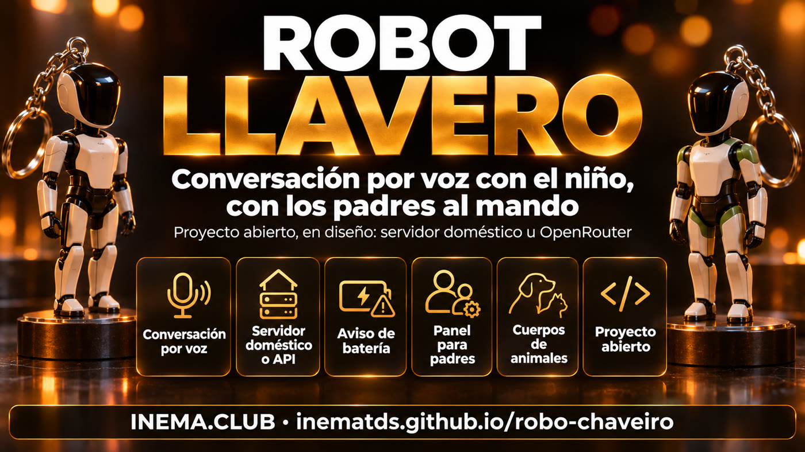
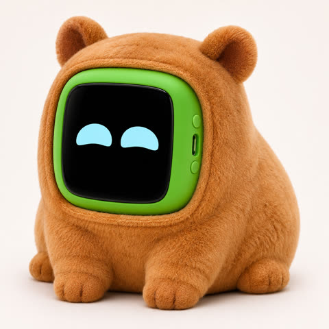
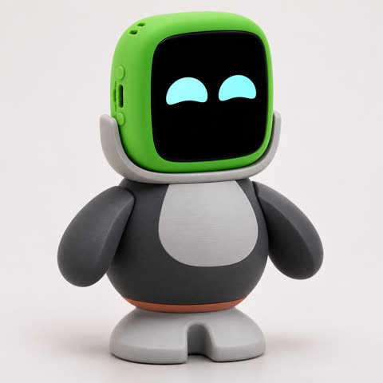

Tu hijo lleva en el bolsillo un pequeño robot que conversa con él, y tú decides cuándo y de qué hablar
Quieres que el niño converse con una IA sin darle el celular, y sin perder el control de lo que escucha. El Robot Llavero es una pequeña placa de R$ 132 (sin envío), del tamaño de un llavero, con pantalla y voz, que responde hablando. El diseño prevé que los padres elijan el nombre, la voz, los horarios y el tiempo diario. Hoy es solo un proyecto: la placa todavía no ha llegado.
Ilustración. La placa todavía no ha llegado: no se ha grabado nada en ella.
En resumen
Este es un proyecto abierto para convertir una pequeña placa con pantalla de 1,54" en una especie de mascota de bolsillo que conversa por voz: el niño mantiene pulsado un botón, habla y el dispositivo responde en voz alta, con una cara de ojos grandes en la pantalla. «Piensa» de una de estas tres maneras: mediante el ordenador de casa, directamente en un servicio de IA en internet (OpenRouter) o a través del ordenador de casa, que reenvía la solicitud a ese servicio. Los padres lo configurarán todo desde el móvil. Hoy existen el diseño sobre el papel y el servidor doméstico, que ya funciona en un proyecto hermano; la placa y su programa todavía no.

Ilustración: el muñeco metálico es decorativo. El llavero real es la placa cuadrada verde con la pantalla que muestra una cara, en la imagen de arriba.
Video
Entiéndelo en 2 minutos
El cuerpo de R$ 132, dónde vive la IA y lo que los padres podrán decidir desde el celular.
Una pequeña placa de llavero no entiende el habla ni piensa la respuesta por sí sola: para eso hacen falta modelos grandes. Así que solo es el cuerpo: escucha, muestra la cara y habla. El pensamiento ocurre fuera de ella.
🔑 El cuerpo, en el bolsillo
Una placa SpotPear con pantalla de 1,54", micrófono, altavoz, dos botones y una funda con un orificio para colgar. El niño mantiene pulsado el botón, habla hasta 15 segundos y lo suelta. No tiene cámara.
🧠 El cerebro, en casa o en internet
En casa, un programa del ordenador convierte el habla en texto, pide una respuesta a una IA (Claude, con pago mensual y no por pregunta) y genera la voz allí mismo. Cuando está lejos de casa, el diseño prevé un servicio de IA por internet (OpenRouter), que aún no ha sido autorizado ni probado.
🔋 Avisa antes de apagarse
Fue diseñado para funcionar con batería (aún no se ha verificado si la versión de llavero incluye una batería ni de qué capacidad). El diseño: cuando se esté agotando, muestra ojos soñolientos, luego pide «ponme a cargar» y, al final, se despide y se duerme. Las frases quedan grabadas en el dispositivo para que el aviso funcione incluso sin internet.
Seguridad desde el diseño: anilla o mosquetón, nunca un cordón alrededor del cuello del niño sin cierre de seguridad. Ninguna pieza pequeña que pueda desprenderse. El robot nunca pedirá el nombre completo, la dirección ni la escuela: esa es una regla del proyecto. Además, en el servidor doméstico, la IA funciona sin herramientas: solo escribe texto, no puede modificar nada en el ordenador.
Lo que existe hoy
Lo que está listo y lo que solo está diseñado
Situación al 15/11/2026. Sin promesas: solo lo que se ha hecho.
✓ Listo (en el proyecto hermano)
El servidor doméstico
El cerebro doméstico es el del Robot CoreS3 Lite, ya probado con grabaciones: se midieron entre 6,8 y 7,6 s hasta el primer sonido de respuesta, con los modelos cargados. El llavero utilizará ese mismo servidor.
◐ Comprada, en camino
La placa
SpotPear ESP32-S3 de 1,54", probablemente el modelo «muma», comprada por R$ 132,14 el 15/11/2026. El modelo exacto, la batería y los pines de sonido solo se confirmarán cuando la tengamos en mano.
○ Solo en el papel
Programa de la placa, panel y aviso de batería
El programa de la placa, el panel de los padres, el aviso de batería y el acceso por internet están diseñados, con un criterio de finalización para cada uno. Todavía no se ha escrito nada de eso.
Sin nube de terceros de fábrica: la placa viene con un programa de fábrica que envía la voz a un servicio de terceros (XiaoZhi). No se activará: la voz de los niños no saldrá del dispositivo sin que los padres lo decidan. Más adelante se podrá restaurar el programa de fábrica con los archivos de la propia SpotPear.
Tres cerebros
En casa, directamente en internet o combinando ambos
El mismo llavero puede usar cualquiera de las opciones. Hoy solo existe el servidor doméstico; las otras dos requerirán la autorización del dueño del proyecto para usar el servicio de pago.
Desde el ordenador de casa
Directamente por internet (OpenRouter)
Casa reenvía a internet
Dónde funciona
En la red wifi de casa, con el ordenador encendido
En cualquier wifi, incluso la del móvil
Donde el llavero pueda conectarse al ordenador
Tiempo de respuesta
De 6,8 a 7,6 s hasta el primer sonido, medido en el proyecto hermano
No medido
No medido
Coste
Solo la suscripción mensual de Claude y el ordenador encendido
Pago por uso, con límite diario
Pago por uso
Contraseña del servicio de pago guardada en el llavero
Ninguna
Una exclusiva para él, con límite diario de gasto; si se pierde el llavero, basta con desactivarla
Ninguna
Voz
Generada en el ordenador de casa
La del servicio
La de casa o la del servicio
Estado
Existe (proyecto hermano)
Solo está diseñado; no se ha hecho ninguna llamada
Según la documentación de OpenRouter, un turno completo cabe en una sola solicitud: se envía la grabación y la respuesta vuelve en fragmentos de audio y texto, que el llavero reproduce a medida que llegan. Aún no se han comprobado qué modelos de voz están disponibles ni cuánto cuestan.
Los padres al mando
Lo configurarás desde el móvil, y el niño sabrá que puedes verlo
○ Solo en el papel Diseño de dos pantallas: la configuración inicial en el propio llavero y un panel familiar en el ordenador de casa, que se abre desde el móvil.
🏷️ Ponerle nombre y personalidad
Nombre del llavero, apodo del niño (nunca su nombre completo), grupo de edad, personalidad (juguetón, tranquilo, curioso, profesor), voz, color de ojos y volumen máximo.
⏰ Poner límites
Horarios permitidos (fuera de ellos: «ahora toca descansar»), minutos al día, botón de «pausar ahora», temas que los padres prefieren evitar y límite de gasto diario cuando se use OpenRouter.
👀 Hacer seguimiento
Historial solo en texto, con la hora, y un resumen del día. Se conserva durante 0, 1, 7 o 30 días y se borra automáticamente. El audio está desactivado por defecto. También muestra el nivel de batería y el último contacto.
Sin vigilancia a escondidas: el llavero le dirá al niño que sus padres pueden ver de qué hablan. Sin ubicación: la placa no tiene GPS y el panel no intentará averiguar dónde está. Los datos quedan en el ordenador de la familia; si se usa OpenRouter, el texto también pasará por ese servicio, y el panel lo indicará.
Una idea para más adelante
Carcasas de animales y personajes, con el llavero como cara
El llavero se encaja en un cuerpo y la pantalla se convierte en la cara del personaje. Las imágenes son propuestas creadas con IA (Codex), no productos fabricados. Quedan para una fase futura.

Capi-Bolso · carpincho de pelucheTatu-Casca · armadillo segmentadoPerereca Pingo · siliconaArara Asa · tejido a crochetNuvim · nube suave, de 3 a 6 añosTrilho · muñeco con capucha

Orbe Robô · soporte impresoIpê Miúdo · madera y fieltro
Reglas comunes: sin imanes, sin ojos de plástico ni piezas que puedan desprenderse; el altavoz y el micrófono deben tener una salida libre; los botones y el puerto de carga deben ser accesibles, y el llavero debe poder sacarse del cuerpo para cargarlo. Las propuestas, con la investigación y los enlaces, están en ideias/corpos/PROPOSTAS.md (en portugués).
Parte técnica
El kit: para quienes quieran montar el suyo
A partir de aquí empieza la parte técnica: la placa, el protocolo, los comandos y las fases. No necesitas esta parte para entender lo anterior.
Qué es
La placa, el servidor reutilizado y los documentos
Todo está en el repositorio, en portugués: la definición, el plan por fases con criterios de finalización y las ideas para las carcasas.
🟩 SpotPear ESP32-S3 de 1,54" (probablemente «muma»)
ESP32-S3 con wifi de 2,4 GHz, 16 MB de memoria flash y 8 MB de PSRAM; pantalla de 240 × 240 (ST7789), táctil solo en la versión «Touch»; micrófono y altavoz; botones de encendido y BOOT; carga por USB-C. Sin cámara. Datos de la ficha técnica y la wiki de SpotPear, todavía sin comprobar en la placa.
🖥️ Servidor del proyecto hermano
El robo-cores3-lite, puerto 8770, se usa tal cual, con el encabezado X-Robo-Id: chaveiro-1. Este proyecto no copia su código.
📄 Diseño completo
DEFINICAO.md (en portugués) describe la placa (sección 2), los tres cerebros (4), el uso fuera de casa (5), la batería (7), los niños (9), el panel de los padres (13) y las carcasas (14).
Cómo funciona
Un turno de conversación a través del servidor doméstico
Conversación por turnos: o escucha o habla. Igual que en el proyecto hermano, pero sin la foto.
Mantén pulsado BOOT→/v1/aquecer→Graba hasta 15 s→/v1/conversa→Whisper→Claude (claude -p), sin herramientas→Chatterbox→Reproduce el audio y muestra la cara
Estados de la cara: listo, escuchando, pensando, hablando; ante un error, lo muestra durante 2 s y vuelve al estado listo, sin reiniciarse. Con OpenRouter, el turno se convierte en una solicitud HTTPS con la grabación, y la respuesta llega en fragmentos de audio (streaming).
Requisitos previos
Qué necesitas
Para el cerebro doméstico hacen falta los mismos requisitos previos que en el proyecto hermano (Linux con tarjeta gráfica NVIDIA, inemavox y suscripción a Claude). Se explican en la guía del Robot CoreS3 Lite.
La placa
SpotPear ESP32-S3 de 1,54" con funda. La primera vez, enciéndela sin configurar el wifi del programa de fábrica.
arduino-cli
La herramienta de línea de comandos de Arduino, con el paquete esp32:esp32. La placa que se elegirá en el compilador se definirá cuando tengamos la placa en mano.
arduino-cli version
Guía de uso · paso a paso
Qué puedes hacer hoy
Los pasos 1 a 3 funcionan hoy, sin la placa. El paso 4 es el primero que la necesita. El programa de la placa todavía no existe.
1
Descargar los dos proyectos
Este, que contiene el diseño, y el hermano, que contiene el servidor.
Crea la configuración: sustituye ROBO_TOKEN por un texto largo y apunta VOZ_REF a un archivo WAV corto con la voz que imitará el robot. Los requisitos previos (inemavox, entorno de Python y Claude Code) están en la guía del proyecto hermano. Después, inicia el servidor en el puerto 8770.
cd robo-cores3-lite
cp servidor/env.exemplo servidor/.env
nano servidor/.env # ROBO_TOKEN e VOZ_REFpython3 servidor/servidor.py
3
Probar el cerebro con una grabación
En otra terminal, en la misma carpeta del paso 1, envía la grabación de prueba. Es la misma solicitud que hará el llavero.
cd robo-cores3-lite
python3 servidor/testar.py servidor/teste/pergunta.wav
4
Cuando llegue la placa: comprueba si aparece
Conéctala con un cable USB-C, sin activar el programa de fábrica en la nube. Debería aparecer un puerto nuevo.
arduino-cli board list
Hoja de ruta
Las fases, cada una con criterios de finalización
El plan completo, con el comando o la medición para comprobar cada criterio, está en PLANO.md (en portugués).
F0
Llega la placa y se enciendeEn curso: comprada el 15/11/2026, todavía en camino.
F1
Graba y envía al servidorLocalizar en el esquema los pines del sonido y la batería; mantener pulsado BOOT para hablar.
F2
Reproduce la respuestaCinco preguntas seguidas, pantalla de error sin reiniciar y autonomía de la batería medida.
F2b
Aviso de bateríaTres niveles calibrados según la descarga medida; funciona sin internet.
F2c
Configuración y panel de los padresNombre, horarios, minutos al día, pausa e historial de texto. El panel puede empezar a desarrollarse antes de que llegue la placa.
F3
El llavero realAnilla, funda y personaje infantil probado con 10 preguntas.
F3b
Cerebro por internet (OpenRouter)Solo después de autorizar el servicio y su finalidad.
F4
OpcionalesCarcasas de animales, cambio automático de cerebro, frases de espera y palabra de activación.